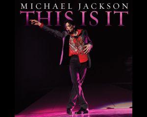

Michael Joseph Jackson (lahir di Gary, Indiana, Amerika Serikat, 29 Agustus 1958 – meninggal di Los Angeles, California, Amerika Serikat, 25 Juni 2009 pada umur 50 tahun)[2] adalah seorang penyanyi dan penulis lagu dari Amerika Serikat. Ia terkenal sebagai the "King of Pop" dan memopulerkan gerakan dansa "Moonwalk" yang telah menjadi ciri khasnya. Albumnya yang dirilis pada tahun 1982, Thriller, adalah album terlaris di dunia, dengan penjualan melebihi 104 juta kopi di seluruh dunia. Ia memulai karier bernyanyi pada usia lima tahun sebagai anggota kelompok vokal keluarga Jackson (kelak menjadi the Jackson 5) sebelum meluncurkan album solo pertamanya Got to Be There pada tahun 1971. Sebagai anak ketujuh dari keluarga Jackson, dia memulai debut di musik profesional pada umur 11 tahun sebagai anggota dari Jackson. Michael Jackson (MJ) adalah seorang manusia yang sangat penyayang. Banyak hartanya yang telah dihabiskan dalam membantu dan menyokong gerakan-gerakan amal seperti Afrika Amerika, mangsa AIDS, mangsa dera kanak-kanak dan bermacam-macam lagi.Walaupun dah berbuat pelbagai kebaikan, MJ masih gagal mencari ketenangan di dalam hatinya. Dia cumalah seorang budak yang terperangkap di dalam badan seorang lelaki. Impiannya adalah untuk menjadi budak kecil selama-lamanya. Impian ini ditambah pula dengan sejarah di mana dia didera semasa kecil yang menyebabkan dia membina Neverland, tempat untuk seluruh kanak-kanak di dunia bermain dan gembira di situ.
Namun MJ telah membuat satu keputusan yang bakal memberikan impak yang sangat besar di dalam hidupnya. Melihat kehidupan dan ketenangan yang dimiliki oleh abangnya (Jermaine) setelah memeluk Islam, MJ telah membuat satu kenyataan gempar di satu press conference pada tahun 1989.“Saya telah melihat Islam di dalam abang saya, saya telah membaca buku tentang Islam dan suatu hari nanti saya mahu rasakan ketenangan dan keamanan Islam itu“. Sejak kenyataan itu hidup MJ tidak sama seperti dahulu lagi. Dituduh berasmara dengan kanak-kanak, ditambah dengan pandangan-pandangan negatif daripada media Amerika Syarikat, membuatkan MJ berada di tahap tertekan. Semua ini dilakukan agar peminat-peminat MJ melihatnya sebagai satu ikon yang gagal seterusnya membuatkan influence MJ berkurangan.Melarikan diri daripada tekanan pihak Media USA, MJ telah tinggal di England selama beberapa tahun. Di England, MJ berkawan rapat dengan Yusof Islam, Dari Yusof Islam, MJ belajar serba sedikit tentang Islam. Malah semasa di England, MJ telah berkawan rapat dengan seorang pencipta lagu, Zain Bhika yang telah menciptakan lagu “Give Thanks To Allah” khas untuk dinyanyikan oleh MJ bila-bila masa dia bersedia.
Konser Terakhir Michael Jackson.
Semasa kes asmaranya dengan kanak-kanak dijalankan, MJ telah melarikan diri dan menetap di Bahrain. Di sana dia menjadi tetamu khas kepada anak Sultan Bahrain. Di sinilah MJ mula mendalami Islam. MJ belajar sembahyang, baca Al-Quran dan macam-macam lagi selama 3 tahun.Akhirnya pada November 2008, MJ pulang ke Los Angeles dan membuat majlis memeluk Islam secara rasmi di rumah kawan karibnya. Pada December 2008, MJ telah pun pergi menunaikan haji bersama Sultan Bahrain dan anaknya. Untuk konsert terakhirnya, MJ mempunyai agenda yang tersendiri. Dia memaklumkan bahawa konsert ini adalah konsert terakhirnya dan berhasrat untuk mengumumkan yang dia adalah seorang Muslim. Malah MJ juga mahu menyanyikan sebuah lagu iaitu Give Thanks to Allah pada konsertnya tersebut bersama Yusof Islam. Sebab itulah MJ memilih London sebagai tempat konsert terakhirnya bukannya di USA kerana takutkan pihak berkuasa USA / CIA (Tali Barut Yahudi).
Pada 12.30pm (25 June), MJ memeluk pengurusnya dan mengucapkan selamat malam. MJ berkata ”Selepas berlatih selama 2 bulan akhirnya saya sudah bersedia untuk konsert kali ini”.. Selepas melambaikan tangan dan mengucapkan selamat malam, MJ pun pulang ke hotel. Tetapi kira-kira jam 2.26 pagi, MJ didapat telah meninggal dunia. Semasa 911 dihubungi, banyak soalan yang ditanya seolah-olah mereka tak tahu siapa itu MJ dan di mana MJ berada. Nampaknya ada pihak yang cuba melengahkan masa bantuan tiba. Tambah pelik bila pihak hospital mengatakan hasil autopsy hanya boleh diperolehi selepas 2 bulan sedangkan teknologi sekarang dah bertambah canggih. Oleh kerana itu, keluarga MJ telah pun mengupah private doktor untuk membuat autopsy ke atas MJ. Keputusannya dikeluarkan hanya selepas 4 hari. Ternyata MJ mati kerana terlalu banyak dos anaethestic, satu ubat yang mampu membuatkan jantung berhenti berdenyut jika diambil secara berlebihan. Satu keputusan yang tidak diwar-warkan di media ialah perut MJ tidak mempunyai langsung ubat ini. Tapi darahnya dipenuhi dengan ubat tersebut. Malah badan MJ dipenuhi dengan kesan suntikan seolah-olah ada orang secara paksa menyuntik ubat tersebut ke dalam badan MJ.
Pelikkan kenapa seorang Presiden beria-beria cakap tiada konspirasi dalam kematian MJ sebelum keputusan rasmi autopsy MJ dikeluarkan? Kalau betullah MJ hendak membunuh diri, buat apa dia beria-beria nak berlatih selama 2 bulan untuk konsertnya?Keluarga MJ inginkan MJ dikebumikan secara Islam. Tapi CIA telah muncul dan memberi ugutan jika pengebumian secara Islam dilakukan secara terang terangan (dalam TV). Ugutannya ialah Katherine, ibu MJ tidak akan mendapat hak penjagaan anak-anak MJ sebaliknya Debbie Rowe yang akan dapat.Akhirnya mereka bersetuju untuk MJ dikebumikan secara Islam di Neverland. Tapi dengan syarat satu pengebumian olok-olok secara Kristian mestilah diadakan. Itulah yang anda semua tengok di TV. Sebab itulah keranda MJ ditutup dan tidak dibuka. Sebab tiada pun mayatnya di dalam keranda itu. Ini semua dilakukan semata-mata hendak memberitahu dunia yang kononnya MJ bukan seorang Islam.Tidak diketahui kebenaran tentang wujudnya konspirasi kematian Michael Jackson. Mungkin benar mungkin tidak. Hanya Dia yang Maha Mengetahui yang tahu.